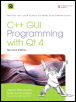

| |
|  |
| |
La Única y Oficial Guía de Buenas Prácticas para programar en Qt 4.3
Usando Qt de Trolltech se pueden construir aplicaciones de potencia industrial en C++ que se ejecuten de forma nativa en Windows, Linux / Unix, Mac OS X y Linux embebido, sin cambios en el código fuente. Ahora, dos miembros de Trolltech han escrito una guía de comienzo a fin para alcanzar unos resultados extraordinarios con la última versión de Qt: Qt 4.3.
Repleto de ejemplos reales y consejos en profundidad, este es el libro que Trolltech utiliza para enseñar Qt a sus nuevos empleados. Ampliamente revisado y ampliado, revela las mejores prácticas de hoy en día sobre la programación en Qt para todo, desde la implementación de un modelo/arquitectura a utilizar el soporte de Qt 4.3 's para gráficos mejorados. Usted encontrará soluciones probadas para prácticamente cualquier tarea de desarrollo GUI, así como las técnicas más sofisticadas para facilitar el acceso a bases de datos, la integración de XML, la creación de subclases, composición, y mucho más. Tanto si usted es nuevo en Qt como si viene de una versión anterior, este libro puede ayudarle a lograr todo lo que Qt 4.3 hace posible.
Completamente actualizado, con una importante nueva cobertura en bases de datos, XML, y programación en Qtopia (integrado en Qt)
Cubre todos los cambios de Qt 4.2/4.3, incluyendo la compatibilidad con Windows Vista, soporte nativo de estilos CSS para widgets, y la generación de archivos SVG
Contiene capítulos separados de 2D y 3D, covertura de las nuevas clases gráficas, y una introducción a la implementación OpenGL de QPainter.
Incluye nuevos capítulos sobre personalización de aspecto y scripting.
Ilustra el modelo/arquitectura de Qt 4, el soporte para plugins, el uso de layouts, procesamiento de eventos, clases contenedores, y mucho más
Presenta técnicas avanzadas no tratadas en otros libros, desde la creación de plugins hasta cómo interactuar con las API nativas
Incluye un nuevo apéndice sobre Qt Jambi, la nueva versión Java de Qt
| |
| Construcción de CHM a HTML con chm2web Pro 2.85 (Unicode) |